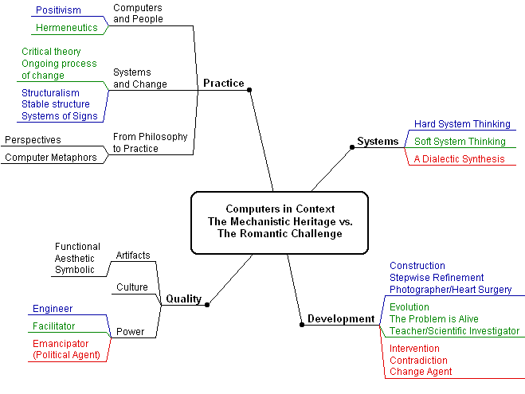
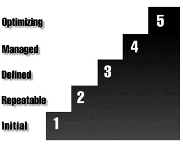
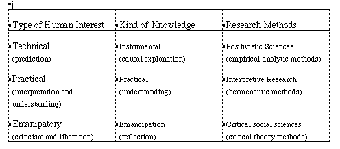

Computers in Context
The Philosophy and Practice of System
Design
This is a summary, done by Kerstin Forsberg, as part of my introduction course at the Viktoria Institute for Research on Information Technology Use. See more about this on my study-page for my industrial education program
Table of content
- The idea of this book
- Overview - Mindmap
- A few personal reflections
- More about some of the Key Concepts, Ideas and Persons
- Further Reading
- Link List
The idea of this book ...
- ... turn our back on the buzzwords for a while and reflect on our profession.
- ... introduce a number of perspectives from our intellectual history and apply them to the world of computers and systems development.
- ... explicitly play with perspectives and metaphors to stimulate learning.
- ... deal with the fundamental challenge of our profession, the challenge to make the relation between philosophy and practice a dialectic process of confrontation and change, to turn daily routine into a struggle for quality.
- ... not to become philosophers but rather to challenge
ourselves to become more professional.
Overview - Mindmap

A few personal reflections
During my reading of this book, several situations and persons,
successes and disasters came to my mind from more than 15 years
of experience as a system developer in a big corporation.
The Mechanistic Heritage
Being a practitioner using dataflow-diagrams and datamodels during
the 80s and objectmodels and processmaps during the early 90s,
it was interesting to realize that I tried to be a good engineer.
Really believing that we could "photograph" the operations
from the outside, finding the core objects, the real relationships
and the explicit rules to be able to build the perfect system
for the next decade.
The top-down approach using structured methods was the paradigm for dealing with the solution. But one of the most common comments from the future users was - Not sure I understand your model …but it looks fine! Which year can you install the system?
During the mid 80s I was involved in the introduction of a new system development process. The model had strictly defined phases and steps delivering specified documents, based on the idea of specification driven development, concentration first on the problem definition and after that, specifying the proposed solution. The objective was to construct the right system solving the right problem, based on the perfect specification.
The top-down approach using structured methods was still the paradigm, used for both dealing with the problem and the solution. But one of the most common questions from the users, now being our fellow project members, was - My colleague told me about a PC-system that I think could solve our problems - couldn't we look at that instead of drawing strange problem-fishbone-diagrams?"
We expanded the development process with a project management process, adding project directives, steering committees and responsibility matrixes, as well as steps to define and verify the objectives. We wanted to know the exact objectives and have the best plans to gain effective coordination in giant projects, typical for that decade.
The top-down approach using structured methods was now also used for controlling the process of constructing the system. But one of the most common criticism from the future system owners, now being members of the steering committees, was - I don't want to pay for a directive saying what the objectives of my functions are! I want a working solution tomorrow!
After reading this book I see that our top-down approach was a typical hard system approach, applying hard system thinking to system development. Our perspective was influenced by the mechanistic heritage from Descartes and Leibniz; thinking as mathematical computation. Our system construction paradigm, was actually going back to Aristotelian concepts - formalizing our knowledge by providing rules and criteria. We tried to use a bureaucratized version of problem solving, using ideas in the positivistic tradition - analyzing objects into their constitutes, generalizations, trying to be observers of the reality representing facts.
A Romantic Challenge
In the late 80s I heard about new ideas of a Spiral Model instead of a Waterfall Model. This was an exciting idea which I immediately liked after participating in at least two giant projects, trying to write the perfect specification, and then building The System of the decade. One of them was pretty much a success, but almost caused a couple of burn-outs, and the other one more or less a disaster. I was questing our methods and looking for other approaches all over.When joined another part of the corporation I realized that I changed environment; applications for engineers instead of administration departments and economy functions, calculation tools used by a few specialists instead of big systems for hundreds of users, or more, and workstations instead of water-cooling giants. Also the culture was different; identifying and experimenting with possible solutions was more important than analyzing problems; together with the users, also being our engineering colleagues, we developed the tools, learning from each other - the tool-maker and the tool-user.
Enthusiastically we tried to apply the Spiral Model ideas using an iterative development process which we thought was extremely suitable for smaller project within the Technology Development domain. Still using our common Development Model, from the traditionally Administrative Development domain, as a framework. Adapting the creativity phase to an iterative and learning process for the key parts of the future solution - the system evolved bottom-up. But our enthusiasm wasn't shared with colleagues in the system development method community: - Don't confuse the users of the model with new and unknown concepts, we have to stick to the pure model.
After reading this book I see that our bottom-up approach was a typical soft system approach, applying soft system thinking to system development. Our perspective was influenced by the romantic tradition from Freud and Nietzsche; appreciating the complexity of human beings, social organizations and information use. Our idea of system development as a learning process, was actually going back to Platonic intuitions - knowing something based on doing something. We tried to use an evolutionary version of methods for developing solutions, using ideas in the hermeneutics tradition - interpretation, understanding our users professional language, going back and forth between the parts and the whole, trying to be facilitators in the dialog with the users, experimenting, developing satisfactory computer solutions.
Struggling for Quality
After the depression in the early 90s Quality Assurance, ISO9000 and Quality Plans became the magic words. During this period I joined the method department, my ambition was to adapt our common processes and methods gradually towards a more iterative approach. Instead I become a part of the Quality System as one of 18 process-owners. The goal was to be certified and we got the certificate a year later.Now we have loads of process descriptions, internal and external auditions, review-procedures and test-methods, and we measure the numbers of reviewed directives and written contracts. When we have contradictions with our users, now we call them customers, we say: - The system owner approved the directive, the quality objectives, and signed the contract and that functionality wasn't mentioned in it so it is not our responsibility if you aren't satisfied!
After reading this book I see that we approached the quality issue as engineers, influenced by our mechanistic heritage using a bureaucratize process. We concentrated on quality assurance methods and control procedures implementing them top-down. We did not really engage the competence and basic assumptions of each individual employee. To turn the general question of quality into more operational questions of specific qualities in work-groups and projects, identifying opportunities to improve quality, select and emphasize the initiatives that were useful bottom-up.
The media contradictions
Now in the middle of the 90s many of us system developer have been overwhelmed by the internet-technologies, providing the active actors, no more passive users, with a medium for interaction and communication. Today we can se contradictions every day between the central information staff and individual departments and groups about how a web-page on intranet should be designed, between the traditionally PC-support and individual users about which plug-ins to use, between the central IS-department and the local webmaster about which software to download.Where does system development start when web-pages evolve into database-interfaces, when workflow-systems become into the framework for information handling, and when intranet-structures help us to navigate through data, information, manuals and discussions? When technology and business conditions evolve so fast - what approach can add value in the designing for change?
After reading this book I see that we have to use a dialectic approach viewing the organization as a living organism with powerful internal forces and conflicts. Our perspective will be influenced by critical theorists tradition from Marx, Habermas and Foucault; the importance of self-realization through expression and the idea of an ongoing process of change and emancipation. Using computers to make our lives rich and rewarding instead of narrow and boring.
Conclusion and added-value for me
Reading this book gave me a thought-provoking analysis of our profession. It was a challenge to read and think on parallel levels: to understand the introduced philosophers and their ideas, at the same time seeing the perspectives on the world of computers and systems development from the authors view and also trying to reflect on my own experiences.I saw many parallels to a book I read in the late 80s, Den datoriserade Prometheus by Johansson C and Grahm Å, 1986 (see my summary of the book in Swedish). The book introduced three value-perspectives on system development: positivism, commercialism and humanism. Johansson and Grahm advocate an iterative approach and system development as a learning process. Reading Computers in Context gave me a more in-depth and up-to-dated view of philosophical perspectives on system development.
The discussions about Systems and Development were easy to read and understand. The key chapter about Quality was hard to understand, especially since it introduced so many perspectives that I got lost several times. The summary in the concluding discussion on Systems and Change and From Philosophy to Practice explained many of my questions and gave me inspiration to write down these reflections.
The book gave me one keyword, one idea, and one quotation, which I think are the added-values for me reading this book:
- The keyword is Facilitator = someone who makes progress easier (see Facilitator) which I think will be a role I would like to learn more about and I will try to include more enlightened in my profession.
- The idea is Hermeneutics = the science and methodology of interpretation (see Hermeneutics) which will be one of my starting points for my future studies.
- The quotation will be part of my professional objectives:
Use our tools, technical and otherwise, as tools for cultivating
a process rather than designing a product.
More about some of the Key Concepts, Ideas and
Persons
Capability Maturity Model
| Critical Theory | Contradiction
| Dialectics | Dialectical thinking
| Facilitator | Habermas
| Hegel | Hermeneutics
| Interpretation | Intervention
| Lévi-Strauss | Positivism
| Spiral Process Model | Tinker or Bricoleur
|
Capability Maturity Model
The Capability Maturity Model for Software describes the principles and practices underlying software process maturity and is intended to help software organizations improve the maturity of their software processes in terms of an evolutionary path from ad hoc, chaotic processes to mature, disciplined software processes. The CMM is organized into five maturity levels:
 | 1 Initial. The software process is characterized as ad hoc, and occasionally even chaotic. Few processes are defined, and success depends on individual effort and heroics.
2 Repeatable. Basic project management processes are established to track cost, schedule, and functionality. The necessary process discipline is in place to repeat earlier successes on projects with similar applications. 3 Defined. The software process for both management and engineering activities is documented, standardized, and integrated into a standard software process for the organization. All projects use an approved, tailored version of the organization's standard software process for developing and maintaining software. 4 Managed. Detailed measures of the software process and product quality are collected. Both the software process and products are quantitatively understood and controlled. 5 Optimizing. Continuous process improvement is enabled by quantitative feedback from the process and from piloting innovative ideas and technologies. |
- Source: Software Engineering Institute, Capability Maturity Model (sm) for Software
Critical Theory
Critical theory is primarily a way of doing philosophy, integrating the normative aspects of philosophical reflection with the explanatory achievements of the social sciences. The ultimate goal of its program is to link theory and practice, to provide insight, and to empower subjects to change their oppressive circumstances and achieve human emancipation, a rational society that satisfies human needs and powers....Habermas' analysis of communication seeks to provide norms for non-dominating relations to others and a broader notion of reason.[Cambridge Dictionary of Philosophy, pp. 278-79]
- Source: Illuminations: The Critical Theory Website
- Contemporary Philosophy, Critical Theory and Postmodern Thought
Contradiction
Contradiction is the central point of Hegel's critique of Formal Logic and the most popular concept for introducing dialectical ideas.
Sense 1 - negation, contradiction, opposition, oppositeness
Sense 2 - contradiction, contradiction in terms -- ((in logic)
a statement that is necessarily false; ``the statement `he is
brave and he is not brave' is a contradiction'' )
Sense 3 - contradiction -- (the speech act of contradicting someone;
``he spoke as if he thought his claims were immune to contradiction''
)
falsehood, falsity, untruth, false statement -- (a false statement)
negation, negating
[Source: Advanced, WordNet Vocabulary Helper via OneLook Dictionaries]
Dialectics
The Hegelian method of logic, based on the concept of advancing contradictory arguments, of thesis and antithesis, and seeking their resolution by synthesis.[Source: Principia Cybernetica Web]
Dialectical thinking
(thinking within more than one perspective)Conducted to test the strengths and weaknesses of opposing points of view. (Court trials and debates are, in a sense, dialectical.) When thinking dialectically, reasoners pit two or more opposing points of view in competition with each other, developing each by providing support, raising objections, countering those objections, raising further objections, and so on. Dialectical thinking or discussion can be conducted so as to "win" by defeating the positions one disagrees with-using critical insight to support one's own view and point out flaws in other views (associated with critical thinking in the restricted or weak sense), or fairmindedly, by conceding points that don't stand up to critique, trying to integrate or incorporate strong points found in other views, and using critical insight to develop a fuller and more accurate view (associated with critical thinking in the fuller or strong sense).
[Source: An Educator's Guide to Critical Thinking Terms and Concepts]
Facilitator
(someone who makes progress easier) -> assistant, helper, help, supporter -- (a person who contributes to the fulfillment of a need or furtherance of an effort or purpose; ``my invaluable assistant"; "they hired additional help to finish the work'' )[Source: Advanced, WordNet Vocabulary Helper via OneLook Dictionaries]
Habermas
Is widely considered as the most influential thinker in Germany over the past decade [1970-80]. As a philosopher and sociologist he has mastered and creatively articulated an extraordinary range of specialized literature in the social sciences, social theory and the history of ideas in the provocative critical theory of knowledge and human interests. His roots are in the tradition of German thought from Kant to Marx, and he has been associated with the Frankfurt School of critical theorists which pioneered in the study of the relationship of the ideas of Marx and Freud.Habermas' Three Domains of Knowledge

Hegel
Georg Wilhelm Friedrich Hegel (1770-1831) was an influential and controversial German idealist in the period after Kant.Hermeneutics
The science and methodology of interpretation, especially of Scriptural text. From the Greek "to interpret."[Source: Principia Cybernetica Web]
- Hermeneutics: From Textual Explication to Computer Understanding?
- A Guide to Selected References on Hermeneutics
Interpretation
Sense1 -interpretation, reading, version -- (a mental representation of the meaning or significance of something)representation, mental representation, internal representation -- (a presentation to the mind in the form of an idea or image)
Sense 2 - rendition, rendering, interpretation
-- (the act of interpreting something as expressed in an artistic
performance)
performance -- (the act of presenting a play or a piece of
music or other entertainment; ``we congratulated him on his performance
at the recital'' )
Sense 3 - interpretation -- (an explanation resulting
from interpreting something)
speech act -- (the use of speech to perform some act)
explanation, account -- (a statement that explains; ``he launched
into a detailed explanation'' )
Sense 4 - interpretation, interpreting, rendition, rendering
representational process -- (any basic cognitive process in which
some entity comes to stand for represent something else)
[Source: Advanced, WordNet Vocabulary Helper via OneLook Dictionaries]
Intervention
Sense1 - intervention, intercessionengagement, participation, involvement -- (sharing the activities of a group)
Sense 2 - intervention, interference -- (a policy of intervening
in the affairs of other countries)
foreign policy -- (a policy governing international relations)
[Source: Advanced, WordNet Vocabulary Helper via OneLook Dictionaries]
Lévi-Strauss
"Father of Structuralism;" born in Brussels. Obtained a law degree from the University of Paris. He became a professor of sociology at the University of Sao Paulo in Brazil in 1934. It was at this time that he began to think about human thought cross-culturally and alterity, when he was exposed to various cultures in Brazil. His first publication in anthropology appeared in 1936 and covered the social organization of the Bororo. After W.W.II, he taught at the New School for Social Research in New York. Here he met Roman Jakobson, from whom he took the structural linguistics model and applied its framework to culture. Lévi-Strauss has been noted as singly associated for the elaboration of the structuralist paradigm in anthropology.- Source: Structuralism by Janelle Meyer
Positivism
Positivism in the philosophy of science holds that we should admit as knowledge only that about which we can be absolutely certain, i.e., what is immediately graspable or "empirical". The first thinker who is labeled a positivist was the nineteenth-century French philosopher August Comte. Comte put great stress on science and progress and was interested only in observable phenomena and the laws that determine how they act together, without any investigation of ultimate causes or metaphysics.[Source: A Hypertext Dictionary of Philosophy]
Spiral Process Model

- Source: Software Productivity Consortium
Tinker or Bricoleur
Concept from Claude Lévi-Strauss
From Tink, because the tinker's way of proclaiming his
trade is to beat a kettle, or because in his work he makes a tinkling noise.
One skilled in a variety of small mechanical work.
[Webster via OneLook Dictionaries]
This is somebody who doesn't care about the purity or stability
of the system s/he uses, but rather uses what's there to get a
particular job done.
A bricoleur is a jack-of-all-trades, a potterer, with overtones
of unexpected strokes. The idea of bricolage has been adopted
by literary critics to describe a style of arranging and rearranging
elements, working through new combinations, to lead to new and
unexpected results. Some people compute with a plan; some people
compute by the seat of their pants they improvise.
- Source: " Sherry Turkle knows what role-playing in cyberspace really means" A profile portrait in Hotwired. Sherry Turkle is professor of the sociology of science at the Massachusetts Institute of and the author of Life on the Screen: Identity in the Age of the Internet.
Further Reading
- Internet Resources
- Books
Link List
- Björn's Guide to Philosophy
- An Educator's Guide to Critical Thinking Terms and Concepts
- A Hypertext Dictionary of Philosophy
- Guide to Philosophy on the Internet
- Philosophy of Science & Information Technology: @BRINT (tm)
- Principia Cybernetica Web
- OneLook Dictionaries
- Anthropology - WWW Virtual Library
- Nicole's AnthroPage